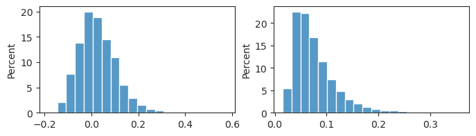
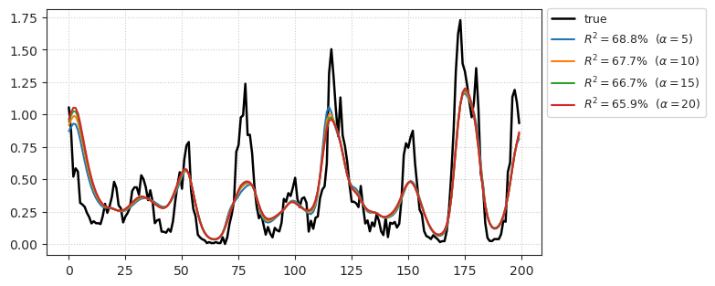

(??) Dataset ALL…#
Motivation: Save all datasets together in a single h5 file.
Show code cell source
# HIDE CODE
import os, sys
from IPython.display import display
# tmp & extras dir
git_dir = os.path.join(os.environ['HOME'], 'Dropbox/git')
extras_dir = os.path.join(git_dir, 'jb-MTMST/_extras')
fig_base_dir = os.path.join(git_dir, 'jb-MTMST/figs')
tmp_dir = os.path.join(git_dir, 'jb-MTMST/tmp')
# GitHub
sys.path.insert(0, os.path.join(git_dir, '_MTMST'))
from vae.train_vae import TrainerVAE, ConfigTrainVAE
from vae.vae2d import VAE, ConfigVAE
from analysis.opticflow import *
from figures.fighelper import *
# warnings, tqdm, & style
warnings.filterwarnings('ignore', category=DeprecationWarning)
from rich.jupyter import print
%matplotlib inline
set_style()
load_dir = '/home/hadi/Documents/MTMST-other/CRCNS/data'
crcns_data = process_crcns(None, load_dir)
expt_name = 'clu014_1'
processed = crcns_data[expt_name]
file.close()
processed['dt']
13.3
processed['aperturediameter']
12
processed['rf_loc'].shape
(1, 2)
list(crcns_data)
['clu004',
'clu014_1',
'clu014_3',
'clu015',
'clu018',
'clu023',
'clu024',
'clu025_1',
'clu025_2',
'clu026',
'clu036',
'clu037',
'clu038',
'clu039',
'clu040',
'clu042',
'clu043',
'clu044',
'clu053',
'clu055',
'clu059',
'clu061',
'clu064',
'clu068',
'clu069',
'clu081',
'clu082_1',
'clu082_2',
'clu087',
'clu088',
'clu089',
'clu090',
'clu095',
'clu096',
'clu099',
'clu104',
'clu107',
'clu108',
'clu109',
'clu110',
'clu116',
'clu120',
'clu126',
'clu131',
'clu132',
'clu142',
'clu144',
'clu145',
'clu146',
'clu147',
'clu148',
'clu180',
'clu181_1',
'clu181_2',
'clu183',
'clu209',
'clu216',
'clu221',
'clu222_1',
'clu222_2',
'clu223',
'clu224_1',
'clu224_2',
'clu225',
'clu226',
'clu227_1',
'clu227_2',
'clu229']
list(crcns_data['clu044'])
['cellid',
'dt',
'spkt',
'spkbinned',
'hf_params',
'hf_center',
'aperturediameter',
'eyeloc',
'rf_loc',
'expt_name',
'cellindex']
list(processed)
['cellid',
'dt',
'spkt',
'spkbinned',
'opticflows',
'aperturecenter',
'aperturediameter',
'eyeloc',
'rfloc']
mat_content['tind_start_all'].shape
(24, 117)
mat_content['repeats'].squeeze()
array([ 16, 316, 616, 916, 1216, 1516, 1816, 2116, 2416,
2716, 3016, 3316, 3616, 3916, 4216, 4516, 4816, 5116,
5416, 5716, 6016, 6316, 6616, 6916, 7216, 7516, 7816,
8116, 8416, 8716, 9016, 9316, 9616, 9916, 10216, 10516,
10816, 11116, 11416, 11716, 12016, 12316, 12616, 12916, 13216,
13516, 13816, 14116, 14416, 14716, 15016, 15316, 15616, 15916,
16216, 16516, 16816, 17116, 17416, 17716, 18016], dtype=uint16)
mat_content['repeats'].squeeze().astype(int)
array([ 16, 316, 616, 916, 1216, 1516, 1816, 2116, 2416,
2716, 3016, 3316, 3616, 3916, 4216, 4516, 4816, 5116,
5416, 5716, 6016, 6316, 6616, 6916, 7216, 7516, 7816,
8116, 8416, 8716, 9016, 9316, 9616, 9916, 10216, 10516,
10816, 11116, 11416, 11716, 12016, 12316, 12616, 12916, 13216,
13516, 13816, 14116, 14416, 14716, 15016, 15316, 15616, 15916,
16216, 16516, 16816, 17116, 17416, 17716, 18016])
spks_r = mat_content['spksR'].astype(float)
spks_r.shape
(24080, 24)
g = file.create_group('CRCNS')
file = h5py.File('./test3.h', 'w')
load_dir = '/home/hadi/Documents/MTMST-other/Yuwei/MTproject_data/xtracted'
g = file.create_group('YUWEI')
yuwei_all = process_mtmst(g, load_dir)
file.attrs.update({
'YUWEI_expts': list(yuwei_all.keys()),
'YUWEI_n_ch': list(yuwei_all.values()),
})
DONE.
list(file)
['NARDIN', 'YUWEI']
dict(file.attrs)
{'NARDIN_expts': array(['slu020', 'slu021', 'slu023', 'slu049', 'slu053', 'slu054',
'slu057', 'slu059', 'slu061', 'ytu289', 'ytu291', 'ytu292',
'ytu293', 'ytu294', 'ytu295', 'ytu296', 'ytu297', 'ytu298',
'ytu299', 'ytu300', 'ytu301', 'ytu303', 'ytu304'], dtype=object),
'NARDIN_nch': array([32, 32, 32, 32, 32, 32, 32, 32, 32, 32, 32, 32, 32, 32, 32, 32, 32,
32, 32, 32, 32, 32, 32]),
'YUWEI_expts': array(['clu036', 'clu037', 'clu038', 'clu039', 'clu040', 'clu043',
'clu044', 'clu053', 'clu055', 'clu059', 'clu061', 'clu064',
'clu068', 'clu069', 'clu081', 'clu082', 'clu087', 'clu088',
'clu089', 'clu090', 'clu095', 'clu096', 'clu099', 'clu104',
'clu107', 'clu108', 'clu109', 'clu110', 'clu116', 'clu120',
'clu126', 'clu131', 'clu132', 'clu142', 'clu145', 'clu146',
'clu147', 'clu148', 'clu180', 'clu181', 'clu183', 'clu209',
'clu216', 'clu221', 'clu222', 'clu223', 'clu224', 'clu225',
'clu226', 'clu227', 'clu229', 'clu267', 'clu292', 'clu293',
'clu294', 'clu295', 'ytu021', 'ytu023', 'ytu028', 'ytu029'],
dtype=object),
'YUWEI_n_ch': array([ 1, 1, 1, 1, 1, 1, 1, 1, 1, 1, 1, 1, 1, 1, 1, 1, 1,
1, 1, 1, 1, 1, 1, 1, 1, 1, 1, 1, 1, 1, 1, 1, 1, 1,
1, 1, 1, 1, 1, 1, 1, 16, 16, 16, 1, 16, 1, 1, 1, 1, 16,
16, 16, 16, 16, 16, 16, 16, 24, 24])}
list(file['NARDIN']['slu021'])
['badspks', 'hf_center', 'hf_params', 'lfp', 'spks']
spks = np.array(file['NARDIN']['slu021']['spks'], dtype=float)
spks.shape
(43200, 32, 3)
plt.imshow(spks.sum(0))
<matplotlib.image.AxesImage at 0x7f0f27948e50>
np.isnan(spks[:, 30, 0]).sum()
0
y = spks[:, 30, 2]
plt.plot(y)
[<matplotlib.lines.Line2D at 0x7f0f78c80250>]
sns.histplot(y[y.nonzero()])
<AxesSubplot:ylabel='Count'>
group = g['clu055']
dict(group.attrs)
{'cellindex': 9,
'expt_name': 'clu055',
'field': array([[-15, 15, -15, 15]], dtype=int16),
'has_repeats': False,
'latency': 0,
'n_channels': 1,
'nx': 15,
'ny': 15,
'partition': array([ 0, 14400, 28800, 43200, 57600]),
'partitionR': array([0]),
'rf_loc': array([[-3, 7]], dtype=int16),
'spatres': array([[2, 2]], dtype=uint8)}
os.listdir(load_dir)
['tres25_ytu304.mat',
'tres25_ytu303.mat',
'tres25_ytu289.mat',
'tres25_ytu295.mat',
'tres25_ytu292.mat',
'tres25_slu061.mat',
'tres25_ytu299.mat',
'tres25_ytu300.mat',
'tres25_ytu301.mat',
'tres25_ytu298.mat',
'tres25_ytu293.mat',
'tres25_ytu297.mat',
'tres25_slu023.mat',
'tres25_ytu294.mat',
'tres25_slu057.mat',
'tres25_ytu296.mat',
'tres25_slu059.mat',
'tres25_slu054.mat',
'tres25_slu053.mat',
'tres25_slu049.mat',
'tres25_slu020.mat',
'tres25_ytu291.mat',
'tres25_slu021.mat']
mat_cont = sio.loadmat(pjoin(load_dir, 'tres25_ytu296.mat'))
list(mat_cont)
['__header__',
'__version__',
'__globals__',
'badspks',
'badspksR',
'cellindex',
'centerx',
'centerxR',
'centery',
'centeryR',
'expt_name',
'field',
'fix_lost_all',
'fixlost',
'fixlostR',
'latency',
'lfp',
'lfpR',
'nx',
'ny',
'opticflows',
'opticflowsR',
'partition',
'partitionR',
'psth_raw_all',
'repeats',
'rf_loc',
'spatres',
'spks',
'spksR',
'spkst',
'spkstR',
'stim1',
'stim2',
'stimR',
'tind_start_all',
'tres']
mat_cont['spks'].shape
(28800, 32, 4)
mat_cont['badspks'].shape
(28800, 1)
mat_cont['partition']
array([[ 0, 14400, 28800]], dtype=uint16)
mat_cont['opticflows'][500]
array([ 1.34072089, 0.44677153, -1.38168409, 0.22660408, 0.97840873,
-0.3681019 ])
mat_cont['opticflows'][500 + 14400]
array([ 1.35970351, 0.44216198, -1.37851939, 0.23243887, 0.97356073,
-0.36288479])
file.attrs.update({
'YUWEI_expts': list(yuwei_all.keys()),
'YUWEI_n_ch': list(yuwei_all.values()),
})
---------------------------------------------------------------------------
AttributeError Traceback (most recent call last)
Input In [215], in <cell line: 1>()
1 file.attrs.update({
----> 2 'YUWEI_expts': list(yuwei_all.keys()),
3 'YUWEI_n_ch': list(yuwei_all.values()),
4 })
AttributeError: 'tuple' object has no attribute 'keys'
list(g['ytu029'])
['badspks', 'hf_center', 'hf_params', 'lfp', 'repeats', 'spks']
dict(g['ytu029'].attrs)
{'cellindex': 13,
'expt_name': 'ytu029',
'field': array([[-15, 15, -15, 15]], dtype=int16),
'has_repeats': True,
'latency': 0,
'n_channels': 24,
'nx': 15,
'ny': 15,
'partition': array([ 0, 14400, 28800]),
'partitionR': array([ 0, 12040, 24080]),
'rf_loc': array([[-5, -6]], dtype=int16),
'spatres': array([[2, 2]], dtype=uint8)}
mat_content['cellindex']
array([[13]], dtype=uint8)
file.close()
yuwei_all
{'clu036': 1,
'clu037': 1,
'clu038': 1,
'clu039': 1,
'clu040': 1,
'clu043': 1,
'clu044': 1,
'clu053': 1,
'clu055': 1,
'clu059': 1,
'clu061': 1,
'clu064': 1,
'clu068': 1,
'clu069': 1,
'clu081': 1,
'clu082': 1,
'clu087': 1,
'clu088': 1,
'clu089': 1,
'clu090': 1,
'clu095': 1,
'clu096': 1,
'clu099': 1,
'clu104': 1,
'clu107': 1,
'clu108': 1,
'clu109': 1,
'clu110': 1,
'clu116': 1,
'clu120': 1,
'clu126': 1,
'clu131': 1,
'clu132': 1,
'clu142': 1,
'clu145': 1,
'clu146': 1,
'clu147': 1,
'clu148': 1,
'clu180': 1,
'clu181': 1,
'clu183': 1,
'clu209': 16,
'clu216': 16,
'clu221': 16,
'clu222': 1,
'clu223': 16,
'clu224': 1,
'clu225': 1,
'clu226': 1,
'clu227': 1,
'clu229': 16,
'clu267': 16,
'clu292': 16,
'clu293': 16,
'clu294': 16,
'clu295': 16,
'ytu021': 16,
'ytu023': 16,
'ytu028': 24,
'ytu029': 24}
dict(file.attrs)
{'YUWEI_expts': array(['clu036', 'clu037', 'clu038', 'clu039', 'clu040', 'clu043',
'clu044', 'clu053', 'clu055', 'clu059', 'clu061', 'clu064',
'clu068', 'clu069', 'clu081', 'clu082', 'clu087', 'clu088',
'clu089', 'clu090', 'clu095', 'clu096', 'clu099', 'clu104',
'clu107', 'clu108', 'clu109', 'clu110', 'clu116', 'clu120',
'clu126', 'clu131', 'clu132', 'clu142', 'clu145', 'clu146',
'clu147', 'clu148', 'clu180', 'clu181', 'clu183', 'clu209',
'clu216', 'clu221', 'clu222', 'clu223', 'clu224', 'clu225',
'clu226', 'clu227', 'clu229', 'clu267', 'clu292', 'clu293',
'clu294', 'clu295', 'ytu021', 'ytu023', 'ytu028', 'ytu029'],
dtype=object),
'YUWEI_n_ch': array([ 1, 1, 1, 1, 1, 1, 1, 1, 1, 1, 1, 1, 1, 1, 1, 1, 1,
1, 1, 1, 1, 1, 1, 1, 1, 1, 1, 1, 1, 1, 1, 1, 1, 1,
1, 1, 1, 1, 1, 1, 1, 16, 16, 16, 1, 16, 1, 1, 1, 1, 16,
16, 16, 16, 16, 16, 16, 16, 24, 24])}
hf_center.shape
(28800, 2)
[f.split for f in mat_files]
['tres25_clu036.mat',
'tres25_clu037.mat',
'tres25_clu038.mat',
'tres25_clu039.mat',
'tres25_clu040.mat',
'tres25_clu043.mat',
'tres25_clu044.mat',
'tres25_clu053.mat',
'tres25_clu055.mat',
'tres25_clu059.mat',
'tres25_clu061.mat',
'tres25_clu064.mat',
'tres25_clu068.mat',
'tres25_clu069.mat',
'tres25_clu081.mat',
'tres25_clu082.mat',
'tres25_clu087.mat',
'tres25_clu088.mat',
'tres25_clu089.mat',
'tres25_clu090.mat',
'tres25_clu095.mat',
'tres25_clu096.mat',
'tres25_clu099.mat',
'tres25_clu104.mat',
'tres25_clu107.mat',
'tres25_clu108.mat',
'tres25_clu109.mat',
'tres25_clu110.mat',
'tres25_clu116.mat',
'tres25_clu120.mat',
'tres25_clu126.mat',
'tres25_clu131.mat',
'tres25_clu132.mat',
'tres25_clu142.mat',
'tres25_clu145.mat',
'tres25_clu146.mat',
'tres25_clu147.mat',
'tres25_clu148.mat',
'tres25_clu180.mat',
'tres25_clu181.mat',
'tres25_clu183.mat',
'tres25_clu209.mat',
'tres25_clu216.mat',
'tres25_clu221.mat',
'tres25_clu222.mat',
'tres25_clu223.mat',
'tres25_clu224.mat',
'tres25_clu225.mat',
'tres25_clu226.mat',
'tres25_clu227.mat',
'tres25_clu229.mat',
'tres25_clu267.mat',
'tres25_clu292.mat',
'tres25_clu293.mat',
'tres25_clu294.mat',
'tres25_clu295.mat',
'tres25_ytu021.mat',
'tres25_ytu023.mat',
'tres25_ytu028.mat',
'tres25_ytu029.mat']
f = h5py.File('./test.h5', 'w')
g = f.create_group('gg')
g.attrs
<Attributes of HDF5 object at 139703105626176>
load_dir = '/home/hadi/Documents/MTMST-other/Yuwei/MTproject_data/xtracted'
tres = 25
import scipy.io as sio
# file_name = f"{file_name}_tres{tres:d}.h5"
# file_name = pjoin(save_dir, file_name)
# ff = h5py.File(file_name, 'w')
mat_files = sorted(os.listdir(load_dir))
mat_files = [f for f in mat_files if f"tres{tres}" in f]
pbar = tqdm(mat_files)
0%| | 0/60 [00:00<?, ?it/s]
mat_files
['tres25_clu036.mat',
'tres25_clu037.mat',
'tres25_clu038.mat',
'tres25_clu039.mat',
'tres25_clu040.mat',
'tres25_clu043.mat',
'tres25_clu044.mat',
'tres25_clu053.mat',
'tres25_clu055.mat',
'tres25_clu059.mat',
'tres25_clu061.mat',
'tres25_clu064.mat',
'tres25_clu068.mat',
'tres25_clu069.mat',
'tres25_clu081.mat',
'tres25_clu082.mat',
'tres25_clu087.mat',
'tres25_clu088.mat',
'tres25_clu089.mat',
'tres25_clu090.mat',
'tres25_clu095.mat',
'tres25_clu096.mat',
'tres25_clu099.mat',
'tres25_clu104.mat',
'tres25_clu107.mat',
'tres25_clu108.mat',
'tres25_clu109.mat',
'tres25_clu110.mat',
'tres25_clu116.mat',
'tres25_clu120.mat',
'tres25_clu126.mat',
'tres25_clu131.mat',
'tres25_clu132.mat',
'tres25_clu142.mat',
'tres25_clu145.mat',
'tres25_clu146.mat',
'tres25_clu147.mat',
'tres25_clu148.mat',
'tres25_clu180.mat',
'tres25_clu181.mat',
'tres25_clu183.mat',
'tres25_clu209.mat',
'tres25_clu216.mat',
'tres25_clu221.mat',
'tres25_clu222.mat',
'tres25_clu223.mat',
'tres25_clu224.mat',
'tres25_clu225.mat',
'tres25_clu226.mat',
'tres25_clu227.mat',
'tres25_clu229.mat',
'tres25_clu267.mat',
'tres25_clu292.mat',
'tres25_clu293.mat',
'tres25_clu294.mat',
'tres25_clu295.mat',
'tres25_ytu021.mat',
'tres25_ytu023.mat',
'tres25_ytu028.mat',
'tres25_ytu029.mat']
f = mat_files[-1]
mat_content = sio.loadmat(pjoin(load_dir, f))
list(mat_content)
['__header__',
'__version__',
'__globals__',
'badspks',
'badspksR',
'cellindex',
'centerx',
'centerxR',
'centery',
'centeryR',
'expt_name',
'field',
'fix_lost_all',
'fixlost',
'fixlostR',
'latency',
'lfp',
'lfpR',
'num_channels',
'nx',
'ny',
'opticflows',
'opticflowsR',
'partition',
'partitionR',
'psth_raw_all',
'repeats',
'rf_loc',
'spatres',
'spks',
'spksR',
'spkst',
'spkstR',
'stim1',
'stim2',
'stimR',
'tind_start_all']
attrs
{'expt_name': 'ytu029',
'num_channels': 24,
'cellindex': 13,
'nx': 15,
'ny': 15,
'field': array([[-15, 15, -15, 15]], dtype=int16),
'rf_loc': array([[-5, -6]], dtype=int16),
'spatres': array([[2, 2]], dtype=uint8),
'latency': 0,
'partition': array([[ 0, 14400, 28800]], dtype=uint16),
'partitionR': array([[ 0, 12040, 24080]], dtype=uint16),
'has_repeats': True}
has_repeats =
has_repeats
True
attrs
{'expt_name': 'ytu029',
'num_channels': 24,
'cellindex': 13,
'nx': 15,
'ny': 15,
'field': array([[-15, 15, -15, 15]], dtype=int16),
'rf_loc': array([[-5, -6]], dtype=int16),
'spatres': array([[2, 2]], dtype=uint8),
'latency': 0,
'partition': array([[ 0, 14400, 28800]], dtype=uint16),
'partitionR': array([[ 0, 12040, 24080]], dtype=uint16)}
{k for k in mat_content if k not in attrs}
{'__globals__',
'__header__',
'__version__',
'badspks',
'badspksR',
'centerx',
'centerxR',
'centery',
'centeryR',
'fix_lost_all',
'fixlost',
'fixlostR',
'lfp',
'lfpR',
'opticflows',
'opticflowsR',
'psth_raw_all',
'repeats',
'spks',
'spksR',
'spkst',
'spkstR',
'stim1',
'stim2',
'stimR',
'tind_start_all'}
tmp = 'tind_start_all'
mat_content[tmp]
array([[ 26, 226, 427, ..., 23100, 23301, 23502],
[ 26, 226, 427, ..., 23100, 23301, 23502],
[ 26, 226, 427, ..., 23100, 23301, 23502],
...,
[ 26, 226, 427, ..., 23100, 23301, 23502],
[ 26, 226, 427, ..., 23100, 23301, 23502],
[ 26, 226, 427, ..., 23100, 23301, 23502]], dtype=uint16)
def mat2h5py(
load_dir: str,
save_dir: str,
file_name: str,
tres: int = 25,
grd: int = 15, ):
import scipy.io as sio
file_name = f"{file_name}_tres{tres:d}.h5"
file_name = pjoin(save_dir, file_name)
ff = h5py.File(file_name, 'w')
mat_files = sorted(os.listdir(load_dir))
mat_files = [f for f in mat_files if f"tres{tres}" in f]
pbar = tqdm(mat_files)
for f in pbar:
mat_content = sio.loadmat(pjoin(load_dir, f))
expt_name = mat_content['expt_name'].item()
group = ff.create_group(expt_name)
msg = f'group {expt_name} created'
pbar.set_description(msg)
# main
lfp = mat_content['lfp'].astype(float)
spks = mat_content['spks'].astype(float)
# spkst = _fix_spkst(mat_content['spkst']).astype(float)
badspks = mat_content['badspks'].astype(bool)
fixlost = mat_content['fixlost'].astype(bool)
partition = mat_content['partition'][0].astype(int)
hyperflow = np.concatenate([
mat_content['centerx'],
mat_content['centery'],
mat_content['opticflows']
], axis=-1).astype(float)
stim1 = mat_content['stim1'].astype(float)
stim2 = mat_content['stim2'].astype(float)
# metadata
rf_loc = mat_content['rf_loc'].squeeze().astype(float)
field = mat_content['field'].squeeze().astype(float)
cellindex = mat_content['cellindex'].item()
latency = mat_content['latency'].item()
spatres = mat_content['spatres'].squeeze().astype(float)
nx = mat_content['nx'].item()
ny = mat_content['ny'].item()
num_ch = spks.shape[1]
# create datasets
group.create_dataset('lfp', dtype=float, data=lfp)
group.create_dataset('spks', dtype=float, data=spks)
# group.create_dataset('spkst', dtype=float, data=spkst)
group.create_dataset('badspks', dtype=bool, data=badspks)
group.create_dataset('fixlost', dtype=bool, data=fixlost)
group.create_dataset('partition', dtype=int, data=partition)
group.create_dataset('hyperflow', dtype=float, data=hyperflow)
group.create_dataset('stim1', dtype=float, data=_fix_stim(stim1, grd))
group.create_dataset('stim2', dtype=float, data=_fix_stim(stim2, grd))
group.create_dataset('rf_loc', dtype=float, data=rf_loc)
group.create_dataset('field', dtype=float, data=field)
group.create_dataset('cellindex', dtype=int, data=cellindex)
group.create_dataset('latency', dtype=int, data=latency)
group.create_dataset('spatres', dtype=float, data=spatres)
group.create_dataset('nx', dtype=int, data=nx)
group.create_dataset('ny', dtype=int, data=ny)
# repeats?
repeats = mat_content['repeats'].squeeze().astype(int)
if repeats.size:
lfp_r = mat_content['lfpR'].astype(float)
spks_r = mat_content['spksR'].astype(float)
# spkst_r = _fix_spkst(mat_content['spkstR']).astype(float)
badspks_r = mat_content['badspksR'].astype(bool)
fixlost_r = mat_content['fixlostR'].astype(bool)
partition_r = mat_content['partitionR'][0].astype(int)
hyperflow_r = np.concatenate([
mat_content['centerxR'],
mat_content['centeryR'],
mat_content['opticflowsR']
], axis=-1).astype(float)
stim_r = mat_content['stimR'].astype(float)
psth_raw_all = mat_content['psth_raw_all'].astype(int)
fix_lost_all = mat_content['fix_lost_all'].astype(bool)
tind_start_all = mat_content['tind_start_all'].astype(int)
assert num_ch == spks_r.shape[1] == len(psth_raw_all) \
== len(fix_lost_all) == len(tind_start_all)
# create datasets
subgroup = group.create_group('repeats')
subgroup.create_dataset('lfpR', dtype=float, data=lfp_r)
subgroup.create_dataset('spksR', dtype=float, data=spks_r)
# subgroup.create_dataset('spkstR', dtype=float, data=spkst_r)
subgroup.create_dataset('badspksR', dtype=bool, data=badspks_r)
subgroup.create_dataset('fixlostR', dtype=bool, data=fixlost_r)
subgroup.create_dataset('partitionR', dtype=int, data=partition_r)
subgroup.create_dataset('hyperflowR', dtype=float, data=hyperflow_r)
subgroup.create_dataset('stimR', dtype=float, data=_fix_stim(stim_r, grd))
subgroup.create_dataset('psth_raw_all', dtype=float, data=psth_raw_all)
subgroup.create_dataset('fix_lost_all', dtype=int, data=fix_lost_all)
subgroup.create_dataset('tind_start_all', dtype=int, data=tind_start_all)
print('\nDONE.')
ff.close()
return
df
| expt | channel | |
|---|---|---|
| 0 | clu004 | 0 |
| 1 | clu014 | 2 |
| 2 | clu014 | 0 |
| 3 | clu015 | 0 |
| 4 | clu018 | 0 |
| ... | ... | ... |
| 79 | clu227 | 0 |
| 80 | clu227 | 1 |
| 81 | clu229 | 0 |
| 82 | clu229 | 0 |
| 83 | clu229 | 0 |
84 rows × 2 columns
list(processed)
['cellid',
'dt',
'spkt',
'spkbinned',
'opticflows',
'aperturecenter',
'aperturediameter',
'eyeloc',
'rfloc']
processed['spkt']
array([[1.0000000e-02],
[1.6200000e-01],
[2.0600000e-01],
...,
[1.4394475e+03],
[1.4395115e+03],
[1.4401005e+03]])
processed['spkt'].shape, processed['spkbinned'].shape, processed['aperturecenter'].shape
((8015, 1), (86260, 1), (86260, 2))
processed['opticflows'].shape
(86260, 6)
processed
{'cellid': 'clu004',
'dt': 16.7,
'spkt': array([[9.800000e-02],
[1.100000e-01],
[1.120000e-01],
...,
[8.401513e+02],
[8.401573e+02],
[8.402153e+02]]),
'spkbinned': array([[0],
[0],
[0],
...,
[0],
[0],
[0]], dtype=uint8),
'opticflows': array([[ 1.73225354e+01, 7.52188945e-01, 6.59213543e-01,
-1.39475500e-01, -3.27358120e-01, 6.56733840e-01],
[ 1.73331566e+01, 2.26359565e+00, 5.06121980e-01,
2.36987633e-03, -3.89441883e-01, 5.92758645e-01],
[ 1.61917077e+01, 3.55895723e+00, 3.54588802e-01,
1.46946655e-01, -4.41252511e-01, 5.25492131e-01],
...,
[ 3.66943966e+00, -1.08175112e+01, 1.07737244e+00,
-4.93021719e-01, -1.21971989e-01, 7.96471869e-01],
[ 5.75538796e+00, -1.32021455e+01, 9.28953176e-01,
-3.74117847e-01, -1.99369127e-01, 7.54027572e-01],
[ 0.00000000e+00, 0.00000000e+00, 0.00000000e+00,
0.00000000e+00, 0.00000000e+00, 0.00000000e+00]]),
'aperturecenter': array([[-2.10047701, 0.38885926],
[-2.10153472, 0.38171003],
[-2.10259774, 0.37453107],
...,
[-2.09757475, 0.40850971],
[-2.09861762, 0.40144316],
[ 0. , 0. ]]),
'aperturediameter': 8,
'eyeloc': array([[-15.88752083, -1.613666 ],
[ -0.28092053, 0.13408997],
[ -0.29846376, 0.13978207],
...,
[ 0. , 0. ],
[ 0. , 0. ],
[ 0. , 0. ]]),
'rfloc': array([[-25, -5]], dtype=int16)}
processed['RFloc'].shape
(1, 2)
processed
{'cellid': array(['clu004'], dtype='<U6'),
'dt': array([[16.7]]),
'spkt': array([[array([[9.800000e-02],
[1.100000e-01],
[1.120000e-01],
...,
[8.401513e+02],
[8.401573e+02],
[8.402153e+02]])]], dtype=object),
'spkbinned': array([[0],
[0],
[0],
...,
[0],
[0],
[0]], dtype=uint8),
'opticflows': array([[ 1.73225354e+01, 7.52188945e-01, 6.59213543e-01,
-1.39475500e-01, -3.27358120e-01, 6.56733840e-01],
[ 1.73331566e+01, 2.26359565e+00, 5.06121980e-01,
2.36987633e-03, -3.89441883e-01, 5.92758645e-01],
[ 1.61917077e+01, 3.55895723e+00, 3.54588802e-01,
1.46946655e-01, -4.41252511e-01, 5.25492131e-01],
...,
[ 3.66943966e+00, -1.08175112e+01, 1.07737244e+00,
-4.93021719e-01, -1.21971989e-01, 7.96471869e-01],
[ 5.75538796e+00, -1.32021455e+01, 9.28953176e-01,
-3.74117847e-01, -1.99369127e-01, 7.54027572e-01],
[ 0.00000000e+00, 0.00000000e+00, 0.00000000e+00,
0.00000000e+00, 0.00000000e+00, 0.00000000e+00]]),
'aperturecenter': array([[-2.10047701, 0.38885926],
[-2.10153472, 0.38171003],
[-2.10259774, 0.37453107],
...,
[-2.09757475, 0.40850971],
[-2.09861762, 0.40144316],
[ 0. , 0. ]]),
'aperturediameter': array([[8]], dtype=uint8),
'eyeloc': array([[-15.88752083, -1.613666 ],
[ -0.28092053, 0.13408997],
[ -0.29846376, 0.13978207],
...,
[ 0. , 0. ],
[ 0. , 0. ],
[ 0. , 0. ]]),
'RFloc': array([[-25, -5]], dtype=int16)}
names = data['mtdata'].dtype
names
dtype([('cellid', 'O'), ('dt', 'O'), ('spkt', 'O'), ('spkbinned', 'O'), ('opticflows', 'O'), ('aperturecenter', 'O'), ('aperturediameter', 'O'), ('eyeloc', 'O'), ('RFloc', 'O')])
un1 = data[1].item()
spk_times = data[2].item()
badspks = data[3]
hf_params = data[4]
hf_center = data[5]
un2 = data[6].item()
un3 = data[7]
un4 = data[8]
df
| expt | channel | |
|---|---|---|
| 0 | clu004 | 0 |
| 1 | clu014 | 2 |
| 2 | clu014 | 0 |
| 3 | clu015 | 0 |
| 4 | clu018 | 0 |
| ... | ... | ... |
| 79 | clu227 | 0 |
| 80 | clu227 | 1 |
| 81 | clu229 | 0 |
| 82 | clu229 | 0 |
| 83 | clu229 | 0 |
84 rows × 2 columns
old_minus_new = sorted(set(df['expt'].unique()).difference(set(list(vae.cfg.useful_cells))))
old_minus_new
['clu004',
'clu014',
'clu015',
'clu018',
'clu023',
'clu024',
'clu025',
'clu026',
'clu042',
'clu144']
new_minus_old = sorted(set(list(vae.cfg.useful_cells)).difference(set(df['expt'].unique())))
new_minus_old
['clu267',
'clu292',
'clu293',
'clu294',
'clu295',
'ytu021',
'ytu023',
'ytu028',
'ytu029']
cnt = 0
for expt in new_minus_old:
cnt += len(vae.cfg.useful_cells[expt])
cnt
74
df['expt'].unique()
array(['clu004', 'clu014', 'clu015', 'clu018', 'clu023', 'clu024',
'clu025', 'clu026', 'clu036', 'clu037', 'clu038', 'clu039',
'clu040', 'clu042', 'clu043', 'clu044', 'clu053', 'clu055',
'clu059', 'clu061', 'clu064', 'clu068', 'clu069', 'clu081',
'clu082', 'clu087', 'clu088', 'clu089', 'clu090', 'clu095',
'clu096', 'clu099', 'clu104', 'clu107', 'clu108', 'clu109',
'clu110', 'clu116', 'clu120', 'clu126', 'clu131', 'clu132',
'clu142', 'clu144', 'clu145', 'clu146', 'clu147', 'clu148',
'clu180', 'clu181', 'clu183', 'clu209', 'clu216', 'clu221',
'clu222', 'clu223', 'clu224', 'clu225', 'clu226', 'clu227',
'clu229'], dtype=object)
vae = VAE(ConfigVAE('fixate1'))
from torch.nn import functional as F
from sklearn.decomposition import PCA
from analysis.linear import LinearModel, flatten_stim
from base.dataset import setup_supervised_data, setup_repeat_data, time_embed
Load neuron#
cfg = ConfigVAE(save=False)
file = h5py.File(cfg.h_file, 'r')
expt = 'clu090'
grp = file[expt]
scale = 2.25
hf_kws = {
'size': 19,
'sres': 1,
'radius': 6,
}
hf = HyperFlow(
params=np.array(grp['hyperflow'])[:, 2:],
center=np.array(grp['hyperflow'])[:, :2],
**hf_kws,
)
stim = hf.compute_hyperflow()
spks = np.array(grp['spks'], dtype=float)
good = ~np.array(grp['badspks'])
good = np.where(good)[0]
# src, tgt = setup_supervised_data(lags, good, stim, spks)
stim_r, spks_r, intvl = setup_repeat_data(grp, lags=None, hf_kws=hf_kws)
stim_scale = np.max(np.abs(stim))
stim *= scale / stim_scale
if stim_r is not None:
stim_r *= scale / stim_scale
stim.shape, stim_r.shape
((72000, 2, 19, 19), (36000, 2, 19, 19))
Reservoir#
vae = VAE(ConfigVAE(
n_kers=4,
n_latent_scales=2, n_groups_per_scale=20, n_latent_per_group=7,
scale_init=False, residual_kl=True, ada_groups=True,
))
tr = TrainerVAE(model=vae, cfg=ConfigTrainVAE(batch_size=300), device='cuda')
vae.cfg.total_latents()
210
vae.print()
vae.scales
+--------------+------------+ | Module Name | Num Params | +--------------+------------+ | VAE | 17.0 Mil | | --- | --- | | stem | 1.1 K | | pre_process | 96.0 K | | enc_tower | 9.4 Mil | | enc0 | 16.6 K | | enc_sampler | 1.4 Mil | | dec_sampler | 1.4 Mil | | expand | 71.0 K | | dec_tower | 4.5 Mil | | post_process | 40.0 K | | out | 578 | +--------------+------------+
[8, 4]
Extract features#
from readout.readout import process_ftrs
kws_process = dict(
scale=4,
pool='max',
act_fn='swish',
)
# Stim
enc = []
for i in tqdm(range(int(np.ceil(len(stim) / tr.cfg.batch_size)))):
a = i * tr.cfg.batch_size
b = min(a + tr.cfg.batch_size, len(stim))
*_, ftr = tr.model_ema.xtract_ftr(
x=tr.to(stim[a:b]), full=True)
ftr = process_ftrs(ftr['enc'], **kws_process)
ftr = torch.cat(list(ftr.values()), dim=1)
enc.append(to_np(ftr))
enc = np.concatenate(enc)
enc_r = []
for i in range(int(np.ceil(1000 / tr.cfg.batch_size))):
a = i * tr.cfg.batch_size
b = min(a + tr.cfg.batch_size, len(stim_r))
*_, ftr = tr.model_ema.xtract_ftr(
x=tr.to(stim_r[a:b]), full=True)
ftr = process_ftrs(ftr['enc'], **kws_process)
ftr = torch.cat(list(ftr.values()), dim=1)
enc_r.append(to_np(ftr))
enc_r = np.concatenate(enc_r)
enc.shape, enc_r.shape
100%|█████████████████████████████████████████| 240/240 [01:02<00:00, 3.83it/s]
((72000, 5312, 4, 4), (1200, 5312, 4, 4))
mu, sd = enc.mean(0), enc.std(0)
fig, axes = create_figure(1, 2, (8, 2))
sns.histplot(mu.ravel(), bins=20, stat='percent', ax=axes[0]);
sns.histplot(sd.ravel(), bins=20, stat='percent', ax=axes[1]);

mu, sd = enc.mean(), enc.std()
mu, sd
(0.026398346, 0.1213682)
enc = (enc - mu) / sd
enc_r = (enc_r - mu) / sd
pca = PCA(n_components=500)
x = pca.fit_transform(flatten_stim(enc))
x_r = pca.transform(flatten_stim(enc_r))
x.shape, x_r.shape
((72000, 500), (1200, 500))
neuron_i = 0
for lag in range(8):
idxs = good.copy()
idxs = idxs[idxs > lag]
glm_kws = dict(
category='PoissonRegressor',
x=x[idxs - lag],
y=spks[idxs, neuron_i],
x_tst=x_r[intvl - lag],
y_tst=np.nanmean(spks_r[neuron_i], 0),
alphas=[1, 5, 10],
)
glm = LinearModel(**glm_kws).fit(fit_df=False, max_iter=500)
print(lag, glm.r2_tst)
glm.show_pred();
print('~' * 80)
print('\n\n\n')
0 {1: 49.14316710333222, 5: 53.49949415195903, 10: 54.30810076979078}
~~~~~~~~~~~~~~~~~~~~~~~~~~~~~~~~~~~~~~~~~~~~~~~~~~~~~~~~~~~~~~~~~~~~~~~~~~~~~~~~
1 {1: 58.92715275894209, 5: 61.85784651794191, 10: 61.86052389937239}
~~~~~~~~~~~~~~~~~~~~~~~~~~~~~~~~~~~~~~~~~~~~~~~~~~~~~~~~~~~~~~~~~~~~~~~~~~~~~~~~
2 {1: 65.84871314525871, 5: 65.54957956611345, 10: 64.3196898841537}
~~~~~~~~~~~~~~~~~~~~~~~~~~~~~~~~~~~~~~~~~~~~~~~~~~~~~~~~~~~~~~~~~~~~~~~~~~~~~~~~
3 {1: 65.15457547809784, 5: 61.21575829387852, 10: 59.28284474062537}
~~~~~~~~~~~~~~~~~~~~~~~~~~~~~~~~~~~~~~~~~~~~~~~~~~~~~~~~~~~~~~~~~~~~~~~~~~~~~~~~
4 {1: 56.261017121795916, 5: 50.308459100992685, 10: 48.21527124396133}
~~~~~~~~~~~~~~~~~~~~~~~~~~~~~~~~~~~~~~~~~~~~~~~~~~~~~~~~~~~~~~~~~~~~~~~~~~~~~~~~
5 {1: 37.333363681275756, 5: 32.22879586877339, 10: 31.41842349099313}
~~~~~~~~~~~~~~~~~~~~~~~~~~~~~~~~~~~~~~~~~~~~~~~~~~~~~~~~~~~~~~~~~~~~~~~~~~~~~~~~
6 {1: 15.087291487936284, 5: 12.134504321728535, 10: 13.066519409363709}
~~~~~~~~~~~~~~~~~~~~~~~~~~~~~~~~~~~~~~~~~~~~~~~~~~~~~~~~~~~~~~~~~~~~~~~~~~~~~~~~
7 {1: -5.9118929251464225, 5: -5.7799433942577805, 10: -2.9388210522159897}
~~~~~~~~~~~~~~~~~~~~~~~~~~~~~~~~~~~~~~~~~~~~~~~~~~~~~~~~~~~~~~~~~~~~~~~~~~~~~~~~
lags = 5
src = time_embed(x, lags=lags, idxs=good)
src_r = time_embed(x_r, lags=lags, idxs=intvl)
src.shape, src_r.shape
((54386, 5, 500), (200, 5, 500))
%%time
glm_kws = dict(
category='PoissonRegressor',
x=src,
y=spks[good, neuron_i],
x_tst=src_r,
y_tst=np.nanmean(spks_r[neuron_i], 0),
alphas=[5, 10, 15, 20],
)
glm = LinearModel(**glm_kws).fit(fit_df=False, max_iter=1000)
print(glm.r2_tst)
{5: 68.76957887548562, 10: 67.71131426454649, 15: 66.73088909654459, 20: 65.92195401670722}
CPU times: user 49min 30s, sys: 5min 31s, total: 55min 2s
Wall time: 10min 46s
glm.show_pred();

Select best pix/lag using STA#
from analysis.linear import compute_sta
lags = 21
sta = compute_sta(
lags=lags,
good=good,
stim=enc,
spks=spks,
verbose=True,
normalize=True,
)
sta.shape
100%|████████████████████████████████████| 54384/54384 [04:47<00:00, 189.11it/s]
(1, 21, 5312, 4, 4)
enc.shape, spks.shape, len(good)
((72000, 5312, 4, 4), (72000, 1), 54386)
sta.mean(), sta.std()
(0.010635398416079177, 0.691037375734568)
sta.shape
(1, 21, 5312, 4, 4)
flatten_stim(sta[0]).shape
(21, 84992)
u, s, v = sp_lin.svd(flatten_stim(sta[0]), full_matrices=False)
var_explained = 100 * s / s.sum()
np.round(var_explained)
array([92., 7., 1., 0., 0., 0., 0., 0., 0., 0., 0., 0., 0.,
0., 0., 0., 0., 0., 0., 0., 0.])
u.shape, v.shape
((21, 21), (21, 84992))
top_temporal = sp_stats.zscore(u[:, 0])
top_space_filt = v[0].reshape(enc.shape[1:])
plt.plot(top_temporal, marker='o')
[<matplotlib.lines.Line2D at 0x7f84e27bd970>]
best_lag = np.argmax(np.abs(top_temporal)[-10:])
best_lag
5
flatten_stim(top_space_filt).shape
(5312, 16)
np.unravel_index(np.argmax(np.abs(top_space_filt)), top_space_filt.shape)
(1931, 2, 2)
i, j = np.unravel_index(np.argmax(np.abs(top_space_filt)[1931]), (4, 4))
i, j
(2, 2)
plt.imshow(top_space_filt[1931])
plt.colorbar()
<matplotlib.colorbar.Colorbar at 0x7f84dcb43c70>
%%time
lag = 5
idxs = good.copy()
idxs = idxs[idxs > lag]
neuron_i = 0
alphas = [1e-3, 1e-2, 5e-2, 1e-1, 1, 10]
results = {
a: np.zeros((4, 4))
for a in alphas
}
for i, j in itertools.product(range(4), range(4)):
glm_kws = dict(
category='PoissonRegressor',
x=enc[idxs - lag, ..., i, j],
y=spks[idxs, neuron_i],
x_tst=enc_r[intvl - lag, ..., i, j],
y_tst=np.nanmean(spks_r[neuron_i], 0),
alphas=alphas,
)
glm = LinearModel(**glm_kws).fit(fit_df=False, max_iter=500)
for k, v in glm.r2_tst.items():
results[k][i, j] = v if v > 0 else np.nan
print(i, j, glm.r2_tst)
/home/hadi/anaconda3/lib/python3.8/site-packages/sklearn/linear_model/_glm/glm.py:287: ConvergenceWarning: lbfgs failed to converge (status=1):
STOP: TOTAL NO. of ITERATIONS REACHED LIMIT.
Increase the number of iterations (max_iter) or scale the data as shown in:
https://scikit-learn.org/stable/modules/preprocessing.html
self.n_iter_ = _check_optimize_result("lbfgs", opt_res)
0 0 { 0.001: 31.942246256199812, 0.01: 23.647273554273028, 0.05: 21.03130161962564, 0.1: 20.563167551539518, 1: 15.879795677195451, 10: 5.625307955262471 }
/home/hadi/anaconda3/lib/python3.8/site-packages/sklearn/linear_model/_glm/glm.py:287: ConvergenceWarning: lbfgs failed to converge (status=1):
STOP: TOTAL NO. of ITERATIONS REACHED LIMIT.
Increase the number of iterations (max_iter) or scale the data as shown in:
https://scikit-learn.org/stable/modules/preprocessing.html
self.n_iter_ = _check_optimize_result("lbfgs", opt_res)
0 1 { 0.001: 1.8986106550277881, 0.01: 25.47640475904074, 0.05: 21.465422599543338, 0.1: 15.447900354676081, 1: 8.45648487845343, 10: 9.869131295738121 }
/home/hadi/anaconda3/lib/python3.8/site-packages/sklearn/linear_model/_glm/glm.py:287: ConvergenceWarning: lbfgs failed to converge (status=1):
STOP: TOTAL NO. of ITERATIONS REACHED LIMIT.
Increase the number of iterations (max_iter) or scale the data as shown in:
https://scikit-learn.org/stable/modules/preprocessing.html
self.n_iter_ = _check_optimize_result("lbfgs", opt_res)
0 2 { 0.001: 26.81060960308528, 0.01: 23.60760054677694, 0.05: 33.58994543730673, 0.1: 34.09962629611872, 1: 24.933421147762125, 10: 20.320017472324803 }
/home/hadi/anaconda3/lib/python3.8/site-packages/sklearn/linear_model/_glm/glm.py:287: ConvergenceWarning: lbfgs failed to converge (status=1):
STOP: TOTAL NO. of ITERATIONS REACHED LIMIT.
Increase the number of iterations (max_iter) or scale the data as shown in:
https://scikit-learn.org/stable/modules/preprocessing.html
self.n_iter_ = _check_optimize_result("lbfgs", opt_res)
0 3 { 0.001: 5.14679368424914, 0.01: 32.72433521827922, 0.05: 34.17038067184429, 0.1: 34.644865309624606, 1: 34.717817397319436, 10: 19.64765313057072 }
best = np.zeros((len(results), 4, 4))
for i, v in enumerate(results.values()):
best[i] = v
best = np.nanmax(best, 0);
fig, axes = create_figure(1, 6, (9, 1.3), 'all', 'all', constrained_layout=True)
for ax, (k, v) in zip(axes.flat, results.items()):
im = ax.imshow(v, vmin=0)
plt.colorbar(im, ax=ax)
ax.set_title(f"a = {k}")
im = axes[-1].imshow(best)
plt.colorbar(im, ax=axes[-1])
axes[-1].set_title('best')
plt.show()